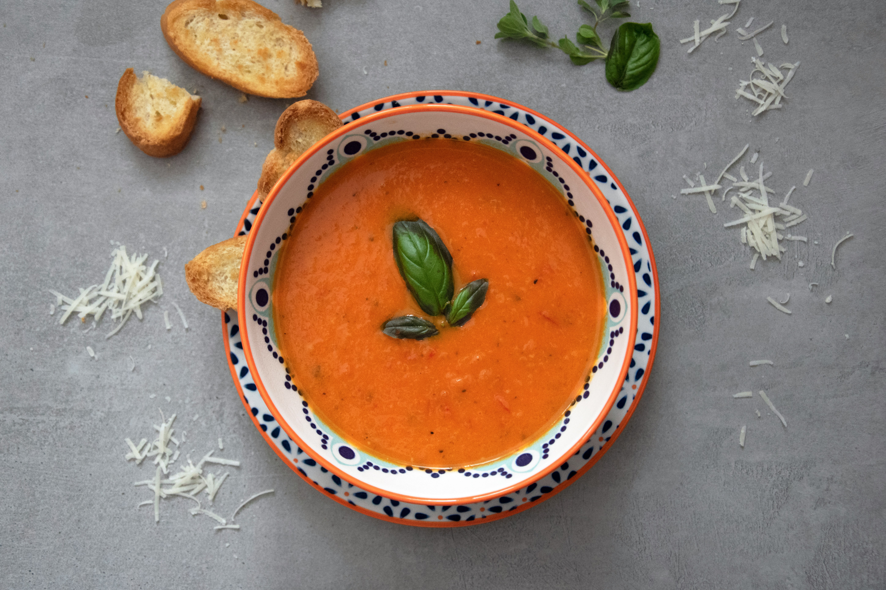
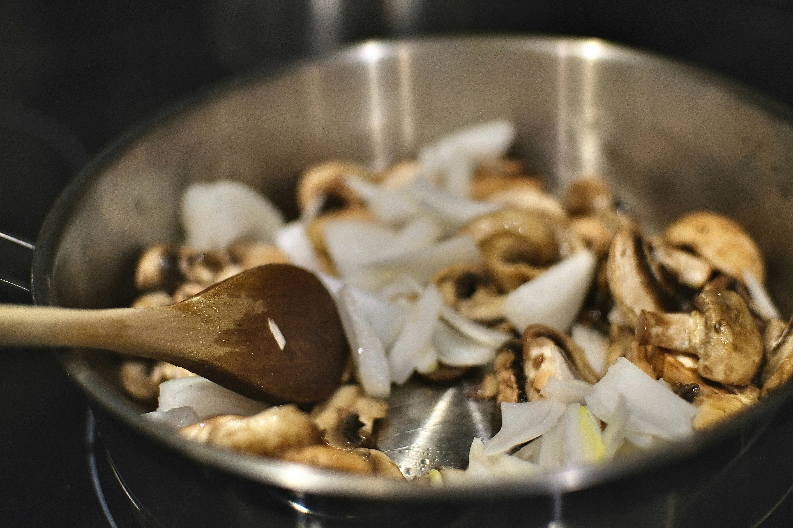
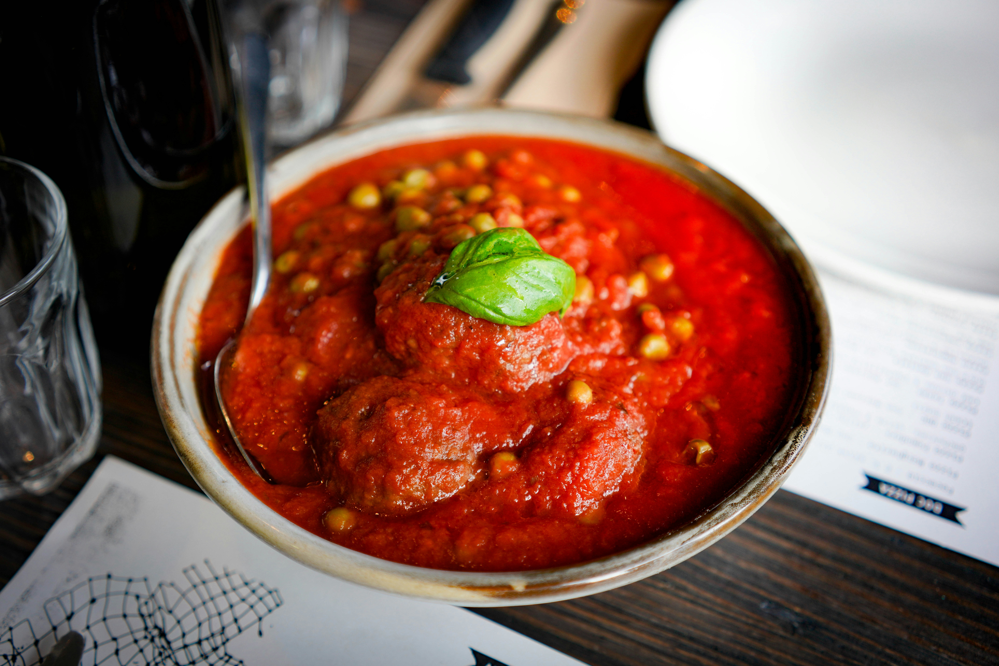
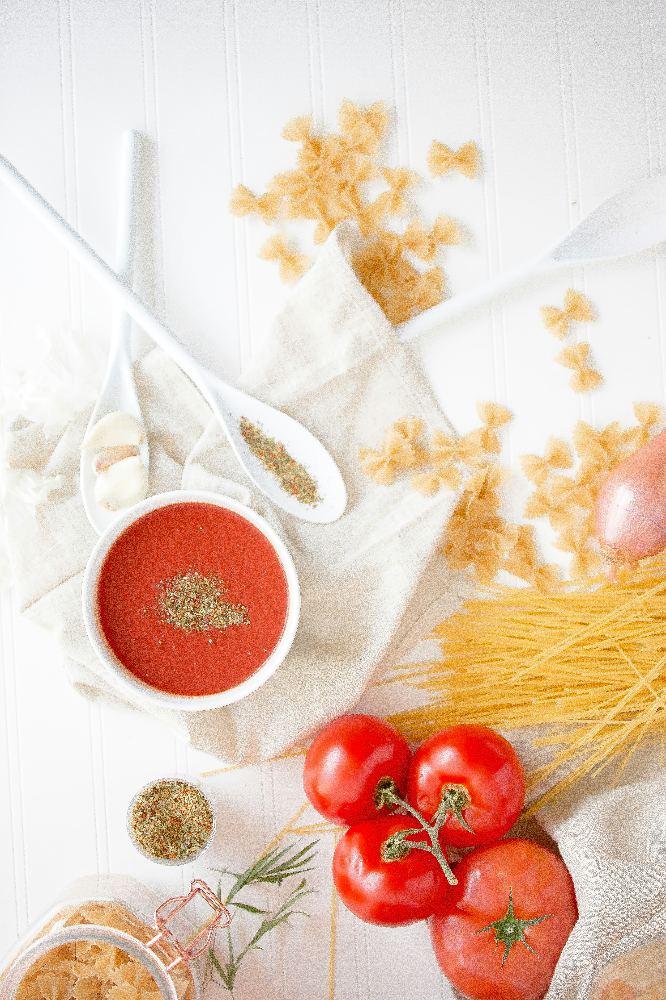

This easy tomato soup is my go-to recipe. It's simple and delicious, ready in 30 minutes, and I give leftovers to my kids for lunch. I usually serve it with rosemary bread for dunking.
Prep Time: 10 mins Cook Time: 20 mins Total Time: 30 mins Servings: 6
Gather all ingredients.

Heat butter and olive oil in a large saucepan over medium-low heat. Cook onion and garlic until onion is soft and translucent, about 5 minutes.

Add tomatoes, water, sugar, celery seed, oregano, red pepper flakes, salt, and pepper. Bring to a boil. Reduce heat, cover, and simmer for 15 minutes.

Remove from heat and purée with an immersion blender. Reheat soup until warm and season with salt and pepper.

(per serving)
Calories 100 Fat 5g Carbs 15g Protein 2g